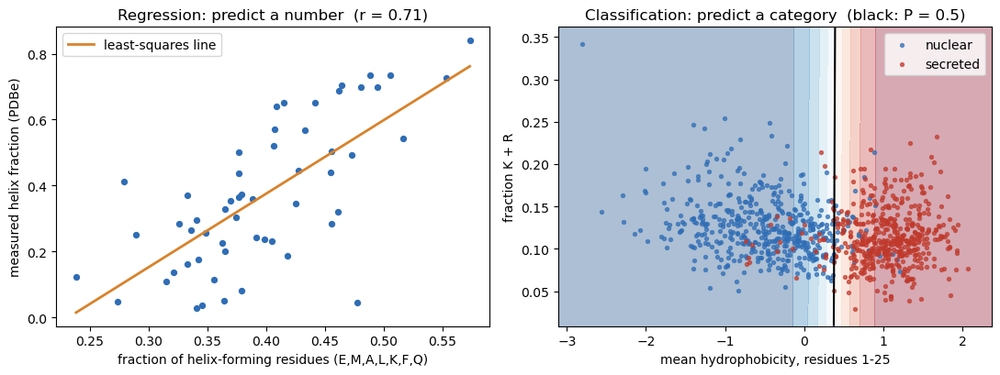
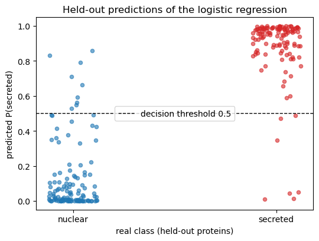
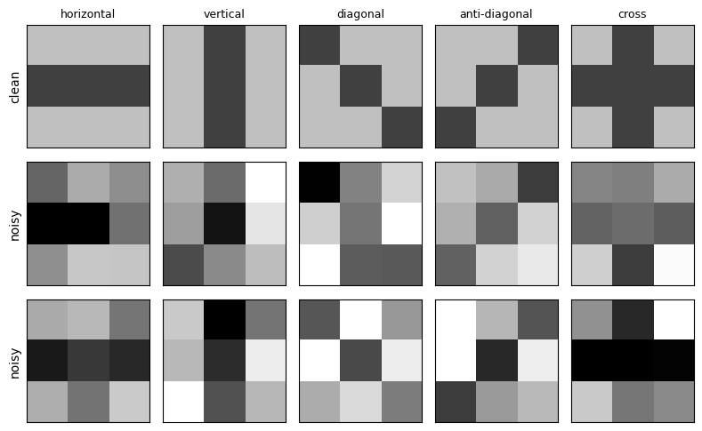
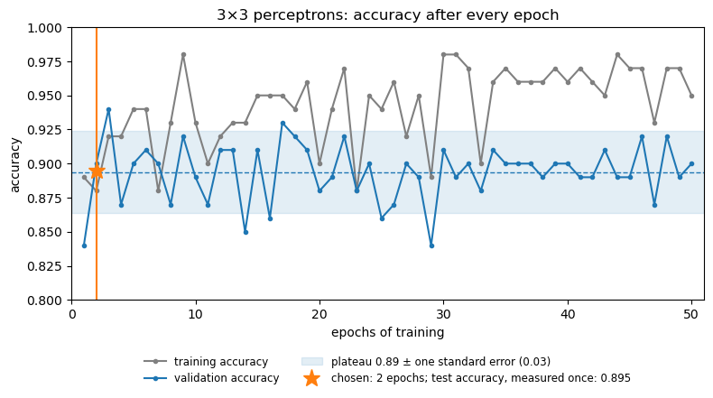
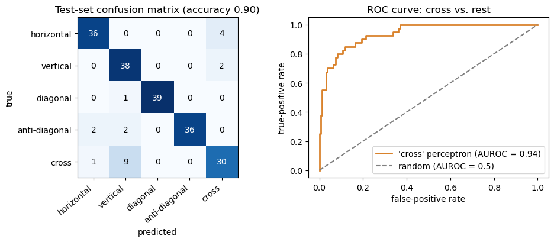
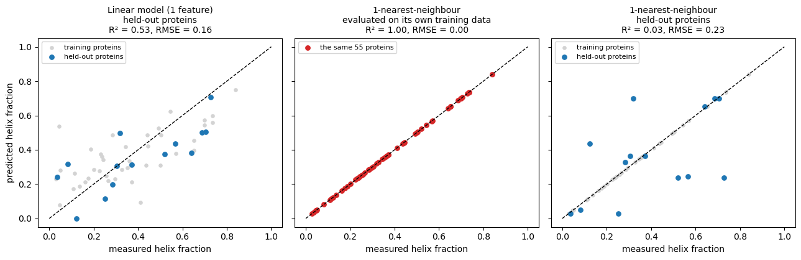
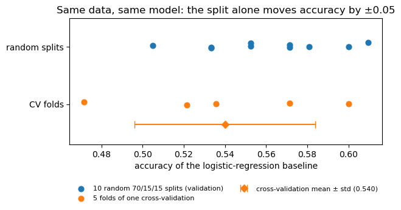
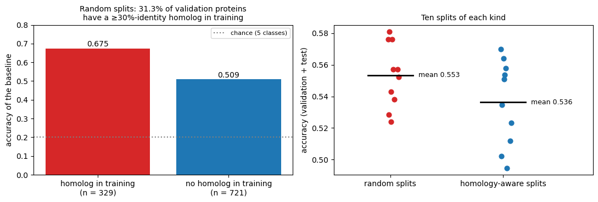
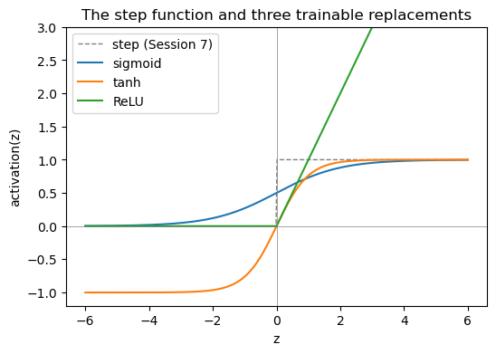

import re, os, shutil, subprocess, tempfile, io
import numpy as np
import requests
import matplotlib.pyplot as plt
import torch
import torch.nn as nn
from sklearn.model_selection import train_test_split, StratifiedKFold
from sklearn.linear_model import LogisticRegression, LinearRegression
from sklearn.metrics import (
confusion_matrix, precision_recall_fscore_support, roc_auc_score,
roc_curve, matthews_corrcoef, mean_squared_error, r2_score,
)
from scipy.stats import pearsonr
torch.manual_seed(0)
np.random.seed(0)
FIGS = "../figs" if os.path.isdir("../figs") else "." # save figures next to the book when run in the repoSession 8 — Machine Learning Foundations & Practical PyTorch, in code
This notebook follows the session’s three parts:
Session 7 asked what a model can represent. This session asks the question that matters in practice: how do we know whether a model has learned anything useful?
- Posing the problem: regression vs. classification on two real biological problems, and a tiny 3×3-pixel pattern problem used as a running toy example.
- Evaluation and generalization (the heart of the session): train/validation/test sets, evaluation metrics, cross-validation, class imbalance, and the biggest biology-specific trap, homologous sequences leaking across the split. We measure that effect on real data.
- Towards training networks: activation functions, softmax, and a real PyTorch
nn.Modulefor subcellular localization. The network is defined and shape-checked here, but not trained. Session 9 trains it on the homology-aware split built in Part 2.
Part 1 — What does it mean to learn from data?
Supervised learning fits a model to labelled examples: inputs whose correct answer is already known. Unsupervised learning looks for structure in data without labels, for example clustering sequences into families. Everything from Session 5 onward is supervised. Supervised problems come in two kinds, depending on what the label is:
- Regression: the label is a number, e.g. a helix fraction, a melting temperature, an expression level or a binding affinity.
- Classification: the label is a category, e.g. a compartment, signal peptide yes/no, or helix/strand/coil.
Below are two real examples, one of each.
A regression problem: helix fraction from composition
The same 55 PDB entries as the Session 7 lab, fetched live from EBI’s PDBe API. Here we use a single feature: the fraction of the sequence made up of residues with a Chou-Fasman helix propensity of at least 1.1 (E, M, A, L, K, F, Q). The target is the real fraction of residues in helices.
PDB_IDS = ['21XG', '38LJ', '9WRU', '9NVT', '9XZ9', '7ILS', '9RYL', '9TLR', '32TC', '13DZ', '9TCX', '9YBX', '9N2Y', '29OL', '9PNX', '9YMO', '9HWE', '9RPQ', '9RR6', '9W2A', '21LO', '9RK7', '9OU3', '9P39', '9T4I', '9VOM', '9W28', '9RFG', '9V5C', '9RQP', '9I4O', '9QWL', '9QYO', '9WM8', '9QRF', '9X6R', '9TZG', '9QGV', '9U97', '9YK5', '9IC9', '9XPD', '9DJF', '9DJR', '9NK4', '9NCE', '9I1B', '9RQQ', '7IPN', '9LCS', '9Z70', '9KZN', '9SI4', '9P45', '9FD0']
HELIX_FORMERS = "EMALKFQ" # Chou-Fasman helix propensity >= 1.1
def fetch_helix_fraction(pdbid):
lo = pdbid.lower()
r = requests.get(f"https://www.ebi.ac.uk/pdbe/api/pdb/entry/molecules/{lo}", timeout=15)
r.raise_for_status()
mol = [m for m in r.json()[lo] if m.get("molecule_type") == "polypeptide(L)" and m.get("sequence")][0]
seq, chain_id, length = mol["sequence"], mol["in_chains"][0], mol["length"]
r = requests.get(f"https://www.ebi.ac.uk/pdbe/api/pdb/entry/secondary_structure/{lo}", timeout=15)
r.raise_for_status()
helices = []
for molecule in r.json()[lo]["molecules"]:
for chain in molecule["chains"]:
if chain["chain_id"] == chain_id:
helices = chain["secondary_structure"].get("helices", [])
n_helix = sum(h["end"]["residue_number"] - h["start"]["residue_number"] + 1 for h in helices)
return seq, n_helix / length
helix_seqs, helix_frac = [], []
for pdbid in PDB_IDS:
s, h = fetch_helix_fraction(pdbid)
helix_seqs.append(s); helix_frac.append(h)
helix_frac = np.array(helix_frac)
former_frac = np.array([sum(s.count(a) for a in HELIX_FORMERS) / len(s) for s in helix_seqs])
print(f"{len(helix_frac)} proteins; helix fraction ranges {helix_frac.min():.2f}-{helix_frac.max():.2f}")
r, p = pearsonr(former_frac, helix_frac)
print(f"Pearson r between helix-former content and helix fraction: {r:.2f} (p = {p:.1e})")55 proteins; helix fraction ranges 0.03-0.84
Pearson r between helix-former content and helix fraction: 0.71 (p = 1.3e-09)A classification problem: secreted or nuclear?
Today’s main dataset: reviewed human proteins from UniProt with exactly one annotated subcellular location, in five classes. It is fetched live once here and reused for the rest of the notebook. Accessions are kept because Part 2 needs them.
UNIPROT_CLASSES = {
"Cytoplasm": "SL-0086",
"Nucleus": "SL-0191",
"Mitochondrion": "SL-0173",
"Secreted": "SL-0243",
"Cell membrane": "SL-0039",
}
CLASS_NAMES = list(UNIPROT_CLASSES.keys())
def fetch_uniprot(sl_code, size=500): # only the first 500 hits, to keep the download small
query = f"organism_id:9606 AND reviewed:true AND cc_scl_term:{sl_code} AND length:[50 TO 500]"
r = requests.get(
"https://rest.uniprot.org/uniprotkb/search",
params={"query": query, "fields": "accession,sequence,cc_subcellular_location",
"format": "tsv", "size": size},
timeout=60,
)
r.raise_for_status()
rows = []
for line in r.text.strip().split("\n")[1:]:
parts = line.split("\t")
if len(parts) == 3:
rows.append(tuple(parts)) # (accession, sequence, location_text)
return rows
def is_unambiguous_single_location(location_text, target):
'''Keep only entries whose SUBCELLULAR LOCATION comment names exactly
one location term (matching the target), ignoring free-text Notes,
evidence-code tags, and skipping isoform-specific annotations.'''
location_text = re.sub(r"Note=.*", "", location_text)
location_text = re.sub(r"\{[^}]*\}", "", location_text)
if "Isoform" in location_text:
return False
terms = set()
for statement in [s.strip() for s in location_text.split(".") if s.strip()]:
body = statement.split(":", 1)[-1] if ":" in statement else statement
top_term = re.split(r"[,;]", body)[0].strip()
if top_term:
terms.add(top_term)
return len(terms) == 1 and next(iter(terms)) == target
entries_by_class = {}
for class_name, sl_code in UNIPROT_CLASSES.items():
raw = fetch_uniprot(sl_code)
clean = [(acc, seq) for acc, seq, loc in raw if is_unambiguous_single_location(loc, class_name)]
entries_by_class[class_name] = clean
print(f"{class_name:15s} raw hits: {len(raw):4d} unambiguous single-location: {len(clean):4d}")Cytoplasm raw hits: 500 unambiguous single-location: 424
Nucleus raw hits: 500 unambiguous single-location: 497
Mitochondrion raw hits: 500 unambiguous single-location: 140
Secreted raw hits: 500 unambiguous single-location: 488
Cell membrane raw hits: 500 unambiguous single-location: 338To be able to plot a classification problem, take just two classes (secreted vs. nuclear) and two biologically motivated features:
- mean Kyte-Doolittle hydrophobicity of the first 25 residues (secreted proteins start with a hydrophobic signal peptide, Session 11);
- the fraction of lysine + arginine (nuclear localization signals and DNA/RNA binding are rich in K/R).
Logistic regression is the classic classifier: the same weighted sum \(z = w_1x_1 + w_2x_2 + b\) as Session 7’s perceptron, passed through the sigmoid \(\sigma(z) = 1/(1+e^{-z})\), which maps it to a number between 0 and 1. Because logistic regression is fitted with the log-loss (cross-entropy), that number can be read as an estimate of \(P(\text{secreted}\mid x)\); how well calibrated it is still has to be checked on held-out data. The decision boundary is where \(P = 0.5\), i.e. \(z = 0\), the same straight line as the perceptron’s.
KD = {'A': 1.8, 'R': -4.5, 'N': -3.5, 'D': -3.5, 'C': 2.5, 'Q': -3.5, 'E': -3.5, 'G': -0.4,
'H': -3.2, 'I': 4.5, 'L': 3.8, 'K': -3.9, 'M': 1.9, 'F': 2.8, 'P': -1.6, 'S': -0.8,
'T': -0.7, 'W': -0.9, 'Y': -1.3, 'V': 4.2}
def nterm_hydrophobicity(seq, n=25):
return np.mean([KD.get(a, 0.0) for a in seq[:n]])
def frac_KR(seq):
return (seq.count("K") + seq.count("R")) / len(seq)
two = [(s, 1) for _, s in entries_by_class["Secreted"]] + [(s, 0) for _, s in entries_by_class["Nucleus"]]
X2 = np.array([[nterm_hydrophobicity(s), frac_KR(s)] for s, _ in two])
y2 = np.array([lab for _, lab in two])
X2_tr, X2_te, y2_tr, y2_te = train_test_split(X2, y2, test_size=0.25, stratify=y2, random_state=0)
logreg = LogisticRegression().fit(X2_tr, y2_tr)
print(f"{len(y2)} proteins ({y2.sum()} secreted, {(1 - y2).sum()} nuclear)")
print(f"held-out accuracy of logistic regression: {logreg.score(X2_te, y2_te):.3f}")
print("weights (hydrophobicity, K+R):", np.round(logreg.coef_[0], 2), " bias:", round(logreg.intercept_[0], 2))
for i in range(3):
print(f" protein with features {np.round(X2_te[i], 2)} -> P(secreted) = {logreg.predict_proba(X2_te[i:i+1])[0, 1]:.3f}"
f" (true: {'secreted' if y2_te[i] else 'nuclear'})")985 proteins (488 secreted, 497 nuclear)
held-out accuracy of logistic regression: 0.935
weights (hydrophobicity, K+R): [ 4.26 -0.2 ] bias: -1.58
protein with features [-0.76 0.13] -> P(secreted) = 0.008 (true: nuclear)
protein with features [1.29 0.18] -> P(secreted) = 0.980 (true: secreted)
protein with features [-0.98 0.15] -> P(secreted) = 0.003 (true: nuclear)Both problems side by side:
fig, (a1, a2) = plt.subplots(1, 2, figsize=(11, 4.2))
lin = LinearRegression().fit(former_frac.reshape(-1, 1), helix_frac)
xx = np.linspace(former_frac.min(), former_frac.max(), 50)
a1.scatter(former_frac, helix_frac, s=18, color="#2f6db5")
a1.plot(xx, lin.predict(xx.reshape(-1, 1)), color="#d9822b", lw=2, label="least-squares line")
a1.set_xlabel("fraction of helix-forming residues (E,M,A,L,K,F,Q)")
a1.set_ylabel("measured helix fraction (PDBe)")
a1.set_title(f"Regression: predict a number (r = {pearsonr(former_frac, helix_frac)[0]:.2f})")
a1.legend(loc="upper left")
g1, g2 = np.meshgrid(np.linspace(X2[:, 0].min() - 0.3, X2[:, 0].max() + 0.3, 200),
np.linspace(X2[:, 1].min() - 0.02, X2[:, 1].max() + 0.02, 200))
prob = logreg.predict_proba(np.c_[g1.ravel(), g2.ravel()])[:, 1].reshape(g1.shape)
a2.contourf(g1, g2, prob, levels=np.linspace(0, 1, 11), cmap="RdBu_r", alpha=0.35)
a2.contour(g1, g2, prob, levels=[0.5], colors="k", linewidths=1.5)
a2.scatter(*X2[y2 == 0].T, s=8, color="#2f6db5", label="nuclear", alpha=0.7)
a2.scatter(*X2[y2 == 1].T, s=8, color="#c0392b", label="secreted", alpha=0.7)
a2.set_xlabel("mean hydrophobicity, residues 1-25")
a2.set_ylabel("fraction K + R")
a2.set_title("Classification: predict a category (black: P = 0.5)")
a2.legend(loc="upper right")
plt.tight_layout()
plt.savefig(f"{FIGS}/session08-regression-vs-classification.png", dpi=150, bbox_inches="tight")
plt.show()
# For each held-out protein: its predicted P(secreted), grouped by its real class (jittered sideways).
y2_pred = logreg.predict_proba(X2_te)[:, 1]
jitter = np.random.RandomState(0).uniform(-0.12, 0.12, len(y2_te))
plt.figure(figsize=(5.5, 4.2))
for cls, name, col in [(0, "nuclear", "tab:blue"), (1, "secreted", "tab:red")]:
sel = y2_te == cls
plt.scatter(cls + jitter[sel], y2_pred[sel], alpha=0.6, s=20, color=col)
plt.axhline(0.5, color="k", ls="--", lw=1, label="decision threshold 0.5")
plt.xticks([0, 1], ["nuclear", "secreted"])
plt.xlabel("real class (held-out proteins)")
plt.ylabel("predicted P(secreted)")
plt.title("Held-out predictions of the logistic regression")
plt.legend(loc="center")
plt.tight_layout()
plt.savefig(f"{FIGS}/session08-classification-predictions.png", dpi=150, bbox_inches="tight")
plt.show()
The fitted classifier leans almost entirely on N-terminal hydrophobicity. The K+R weight is small: the two classes overlap heavily on that axis, and the model learned that from the data.
| Regression | Classification | |
|---|---|---|
| Label | a number | one of \(K\) categories |
| Output unit | linear (no activation) | sigmoid (2 classes) / softmax (\(K\) classes) |
| Loss (Session 9) | mean squared error | cross-entropy |
| Metrics (Part 2) | RMSE, Pearson \(r\), \(R^2\) | confusion matrix, precision/recall, F1, MCC, AUROC |
A running toy example: 3×3 pixel patterns
Magnus Ekman’s Learning Deep Learning (ch. 2) trains perceptrons to recognise tiny 3×3 pixel patterns. We reuse the idea as the smallest possible classification problem: nine inputs (dark = +1, light = −1) and five classes. Every example is a clean pattern plus Gaussian noise (σ = 0.8 per pixel). “Cross” deliberately shares its middle row with “horizontal” and its middle column with “vertical”, so some confusions are expected.
PATTERNS = {
"horizontal": [[0, 0, 0], [1, 1, 1], [0, 0, 0]],
"vertical": [[0, 1, 0], [0, 1, 0], [0, 1, 0]],
"diagonal": [[1, 0, 0], [0, 1, 0], [0, 0, 1]],
"anti-diagonal": [[0, 0, 1], [0, 1, 0], [1, 0, 0]],
"cross": [[0, 1, 0], [1, 1, 1], [0, 1, 0]],
}
PAT_NAMES = list(PATTERNS)
CLEAN = np.array([np.where(np.array(p).flatten() == 1, 1.0, -1.0) for p in PATTERNS.values()])
SIGMA = 0.8
def sample_patterns(n_per_class, rng, sigma=SIGMA):
y = np.repeat(np.arange(len(PAT_NAMES)), n_per_class)
X = CLEAN[y] + rng.normal(0, sigma, (len(y), 9))
return X, y
rng = np.random.RandomState(0)
X_demo, y_demo = sample_patterns(2, rng)
fig, axes = plt.subplots(3, 5, figsize=(8, 5))
for c, name in enumerate(PAT_NAMES):
axes[0, c].imshow(-CLEAN[c].reshape(3, 3), cmap="gray", vmin=-2, vmax=2)
axes[0, c].set_title(name, fontsize=9)
for k in range(2):
axes[k + 1, c].imshow(-X_demo[y_demo == c][k].reshape(3, 3), cmap="gray", vmin=-2, vmax=2)
for ax in axes.flat:
ax.set_xticks([]); ax.set_yticks([])
axes[0, 0].set_ylabel("clean"); axes[1, 0].set_ylabel("noisy"); axes[2, 0].set_ylabel("noisy")
plt.tight_layout()
plt.savefig(f"{FIGS}/session08-3x3-patterns.png", dpi=150, bbox_inches="tight")
plt.show()
Part 2 — Data and evaluation
Training, validation and test sets, on the 3×3 problem
- Training set: used to fit the weights.
- Validation set: used to make choices (here: how many epochs to train) without touching the test set.
- Test set: used once, at the end, to report the final number.
The classifier is five Session 7 perceptrons, one per pattern, each trained with the perceptron rule to output +1 for its own pattern and −1 for the rest (“one-vs-rest”). The predicted class is the perceptron with the highest score \(z\). There is no hidden layer, so no backpropagation is needed.
rng = np.random.RandomState(1)
X_tr, y_tr = sample_patterns(20, rng) # 100 training examples
X_va, y_va = sample_patterns(20, rng) # 100 validation examples
X_te, y_te = sample_patterns(40, rng) # 200 test examples
add_bias = lambda X: np.c_[np.ones(len(X)), X]
def train_one_vs_rest(X, y, epochs, eta=0.1, seed=0):
r = np.random.RandomState(seed)
W = r.uniform(-0.5, 0.5, (len(PAT_NAMES), 10))
Xb = add_bias(X)
for _ in range(epochs):
for i in r.permutation(len(Xb)):
for c in range(len(PAT_NAMES)):
target = 1 if y[i] == c else -1
if np.sign(W[c] @ Xb[i]) != target:
W[c] += eta * target * Xb[i] # Session 7's perceptron update
return W
scores = lambda W, X: add_bias(X) @ W.T
predict = lambda W, X: scores(W, X).argmax(axis=1)
# Train once for 50 epochs and record the accuracy after every epoch.
# (Training for k epochs from the same seed follows exactly this path, so epoch k here = a k-epoch model.)
def train_with_history(X, y, epochs, eta=0.1, seed=0):
r = np.random.RandomState(seed)
W = r.uniform(-0.5, 0.5, (len(PAT_NAMES), 10))
Xb = add_bias(X)
history = []
for _ in range(epochs):
for i in r.permutation(len(Xb)):
for c in range(len(PAT_NAMES)):
target = 1 if y[i] == c else -1
if np.sign(W[c] @ Xb[i]) != target:
W[c] += eta * target * Xb[i]
history.append(((predict(W, X_tr) == y_tr).mean(), (predict(W, X_va) == y_va).mean()))
return np.array(history)
hist = train_with_history(X_tr, y_tr, 50)
train_curve, val_curve = hist[:, 0], hist[:, 1]
epochs_axis = np.arange(1, 51)
print("epochs train acc validation acc")
for e in [1, 2, 3, 5, 10, 20, 50]:
print(f"{e:6d} {train_curve[e-1]:9.3f} {val_curve[e-1]:14.3f}")
print(f"\ntraining accuracy over the 50 epochs: {train_curve.min():.2f} to {train_curve.max():.2f}")
print(f"validation accuracy over the 50 epochs: {val_curve.min():.2f} to {val_curve.max():.2f} "
f"(best single epoch: {val_curve.argmax() + 1}, {val_curve.max():.2f})")
# How noisy is one validation accuracy? With n = 100 examples and accuracy near 0.9,
# its standard error is sqrt(p(1-p)/n):
se = np.sqrt(0.9 * 0.1 / len(y_va))
plateau = val_curve.mean()
print(f"standard error of one validation accuracy (n = {len(y_va)}): about {se:.2f}")
print(f"plateau (mean validation accuracy over all epochs): {plateau:.3f}")
# The rule: the fewest epochs whose validation accuracy reaches the plateau.
best_epochs = int(epochs_axis[np.argmax(val_curve >= plateau)])
W_pat = train_one_vs_rest(X_tr, y_tr, best_epochs)
test_pred = predict(W_pat, X_te)
test_acc = (test_pred == y_te).mean()
print(f"\nchosen on validation: {best_epochs} epochs (validation accuracy {val_curve[best_epochs-1]:.2f})")
print(f"test accuracy, measured once: {test_acc:.3f}")epochs train acc validation acc
1 0.890 0.840
2 0.880 0.900
3 0.920 0.940
5 0.940 0.900
10 0.930 0.890
20 0.900 0.880
50 0.950 0.900
training accuracy over the 50 epochs: 0.88 to 0.98
validation accuracy over the 50 epochs: 0.84 to 0.94 (best single epoch: 3, 0.94)
standard error of one validation accuracy (n = 100): about 0.03
plateau (mean validation accuracy over all epochs): 0.894
chosen on validation: 2 epochs (validation accuracy 0.90)
test accuracy, measured once: 0.895fig, ax = plt.subplots(figsize=(8, 4.6))
ax.plot(epochs_axis, train_curve, "o-", ms=3, color="grey", label="training accuracy")
ax.plot(epochs_axis, val_curve, "o-", ms=3, color="tab:blue", label="validation accuracy")
ax.axhspan(plateau - se, plateau + se, color="tab:blue", alpha=0.12,
label=f"plateau {plateau:.2f} ± one standard error ({se:.2f})")
ax.axhline(plateau, color="tab:blue", lw=1, ls="--")
ax.axvline(best_epochs, color="tab:orange", lw=1.5)
ax.plot(best_epochs, test_acc, "*", ms=14, color="tab:orange",
label=f"chosen: {best_epochs} epochs; test accuracy, measured once: {test_acc:.3f}")
ax.set_xlabel("epochs of training"); ax.set_ylabel("accuracy")
ax.set_ylim(0.8, 1.0); ax.set_xlim(0, 51)
ax.legend(loc="upper center", bbox_to_anchor=(0.5, -0.17), ncol=2, fontsize=8.5, frameon=False)
ax.set_title("3×3 perceptrons: accuracy after every epoch")
plt.tight_layout()
plt.savefig(f"{FIGS}/session08-3x3-epochs.png", dpi=150, bbox_inches="tight")
plt.show()
Two things to see in this plot:
- Training accuracy never settles. The noisy patterns overlap, so no set of straight lines separates all of them, and the perceptron rule keeps changing the weights for every misclassified example.
- Validation accuracy is noisy too. From epoch 2 on it moves around a plateau, and most of the epoch-to-epoch movement is within the noise of an accuracy measured on only 100 examples (the shaded band). The single best epoch (3, 0.94) is partly luck: picking the maximum of 50 noisy numbers gives an optimistic estimate: selection bias. (Choosing on the validation set is what it is for; the bias is in reporting the best score as the expected one.) We use the earliest epoch that has clearly reached the plateau, rather than chasing the highest noisy value.
The test set is then used once, for the chosen model.
Evaluating a classifier
Accuracy alone hides which mistakes are made. The confusion matrix (rows = true class, columns = predicted class) shows them. For each class \(c\), treated as “positive” against the rest:
\[ \text{precision} = \frac{TP}{TP+FP} \qquad \text{recall} = \frac{TP}{TP+FN} \qquad F_1 = \frac{2\cdot\text{precision}\cdot\text{recall}}{\text{precision}+\text{recall}} \]
\[ \text{MCC} = \frac{TP\cdot TN - FP\cdot FN}{\sqrt{(TP+FP)(TP+FN)(TN+FP)(TN+FN)}} \]
cm = confusion_matrix(y_te, test_pred)
print("confusion matrix (rows = true, columns = predicted):")
print(" " * 15 + " ".join(f"{n[:6]:>6s}" for n in PAT_NAMES))
for name, row in zip(PAT_NAMES, cm):
print(f"{name:>14s} " + " ".join(f"{v:6d}" for v in row))
prec, rec, f1, _ = precision_recall_fscore_support(y_te, test_pred, zero_division=0)
print("\nper class: precision recall F1 MCC (class vs rest)")
for c, name in enumerate(PAT_NAMES):
mcc_c = matthews_corrcoef(y_te == c, test_pred == c)
print(f"{name:>14s} {prec[c]:9.2f} {rec[c]:6.2f} {f1[c]:5.2f} {mcc_c:6.2f}")
print(f"\nmulti-class MCC: {matthews_corrcoef(y_te, test_pred):.3f} (scikit-learn uses the multiclass generalization of the binary formula)")confusion matrix (rows = true, columns = predicted):
horizo vertic diagon anti-d cross
horizontal 36 0 0 0 4
vertical 0 38 0 0 2
diagonal 0 1 39 0 0
anti-diagonal 2 2 0 36 0
cross 1 9 0 0 30
per class: precision recall F1 MCC (class vs rest)
horizontal 0.92 0.90 0.91 0.89
vertical 0.76 0.95 0.84 0.81
diagonal 1.00 0.97 0.99 0.98
anti-diagonal 1.00 0.90 0.95 0.94
cross 0.83 0.75 0.79 0.74
multi-class MCC: 0.871 (scikit-learn uses the multiclass generalization of the binary formula)ROC curve. A classifier that outputs a score needs a threshold to turn it into yes/no. Sliding the threshold trades false positives against false negatives; the ROC curve plots the true-positive rate against the false-positive rate for every threshold. Below: the “cross” perceptron’s score, cross vs. everything else. AUROC is 0.5 for random guessing and 1.0 for a perfect ranking.
c = PAT_NAMES.index("cross")
fpr, tpr, thr = roc_curve(y_te == c, scores(W_pat, X_te)[:, c])
auc_cross = roc_auc_score(y_te == c, scores(W_pat, X_te)[:, c])
fig, (a1, a2) = plt.subplots(1, 2, figsize=(10, 4.2))
im = a1.imshow(cm, cmap="Blues")
a1.set_xticks(range(5)); a1.set_xticklabels(PAT_NAMES, rotation=40, ha="right")
a1.set_yticks(range(5)); a1.set_yticklabels(PAT_NAMES)
for i in range(5):
for j in range(5):
a1.text(j, i, cm[i, j], ha="center", va="center", color="white" if cm[i, j] > 20 else "black")
a1.set_xlabel("predicted"); a1.set_ylabel("true")
a1.set_title(f"Test-set confusion matrix (accuracy {(test_pred == y_te).mean():.2f})")
a2.plot(fpr, tpr, color="#d9822b", lw=2, label=f"'cross' perceptron (AUROC = {auc_cross:.2f})")
a2.plot([0, 1], [0, 1], "--", color="grey", label="random (AUROC = 0.5)")
a2.set_xlabel("false-positive rate"); a2.set_ylabel("true-positive rate")
a2.set_title("ROC curve: cross vs. rest"); a2.legend(loc="lower right")
plt.tight_layout()
plt.savefig(f"{FIGS}/session08-3x3-evaluation.png", dpi=150, bbox_inches="tight")
plt.show()
print(f"AUROC, cross vs rest: {auc_cross:.3f}")
AUROC, cross vs rest: 0.938Evaluating a regression model
Regression predictions are not right or wrong, only more or less off. The standard numbers, computed on held-out proteins from the helix example:
- RMSE \(=\sqrt{\frac1n\sum(y_i-\hat y_i)^2}\), in the target’s own units;
- Pearson \(r\) between predicted and true values;
- \(R^2\) \(= 1 - \frac{\sum (y_i-\hat y_i)^2}{\sum (y_i-\bar y)^2}\), the fraction of variance explained (0 = no better than predicting the mean).
They answer different questions. RMSE: how far off are the predictions, in the target’s units? \(r\): do the predictions follow the ups and downs of the truth? \(R^2\): how much better are they than always predicting the mean?
xh_tr, xh_te, yh_tr, yh_te = train_test_split(former_frac.reshape(-1, 1), helix_frac, test_size=0.25, random_state=0)
lin = LinearRegression().fit(xh_tr, yh_tr)
pred_te = lin.predict(xh_te)
rmse = np.sqrt(mean_squared_error(yh_te, pred_te))
baseline_rmse = np.sqrt(mean_squared_error(yh_te, np.full_like(yh_te, yh_tr.mean())))
print(f"{len(yh_tr)} training / {len(yh_te)} test proteins")
print(f"test RMSE: {rmse:.3f} (predicting the training mean for everything: {baseline_rmse:.3f})")
print(f"test Pearson r: {pearsonr(yh_te, pred_te)[0]:.3f}")
print(f"test R^2: {r2_score(yh_te, pred_te):.3f}")41 training / 14 test proteins
test RMSE: 0.159 (predicting the training mean for everything: 0.234)
test Pearson r: 0.760
test R^2: 0.526A high correlation is not the same as accurate predictions. Stretch and shift the same predictions, \(\hat y' = 2\hat y + 0.3\), as a systematically biased predictor would: the ordering is untouched, so \(r\) stays exactly the same, but the numbers are now far off.
biased = 2 * pred_te + 0.3
print(f"biased predictions: Pearson r = {pearsonr(yh_te, biased)[0]:.3f} "
f"RMSE = {np.sqrt(mean_squared_error(yh_te, biased)):.3f} R^2 = {r2_score(yh_te, biased):.3f}")biased predictions: Pearson r = 0.760 RMSE = 0.639 R^2 = -6.670Why the test set matters, in one picture. A model that is flexible enough can simply memorize its training data. 1-nearest-neighbour is the extreme case: it predicts the helix fraction of the most similar protein (by amino-acid composition) that it was trained on. Evaluated on the proteins it was trained on, every protein’s nearest neighbour is itself, so the predictions are perfect. On held-out proteins it is no better than predicting the mean.
from sklearn.neighbors import KNeighborsRegressor
# A model flexible enough to memorize: 1-nearest-neighbour on the 20 amino-acid fractions.
# It predicts the helix fraction of the most similar protein it was trained on.
AAS = "ACDEFGHIKLMNPQRSTVWY"
comp = np.array([[s.count(a) / len(s) for a in AAS] for s in helix_seqs])
idx_tr, idx_te = train_test_split(np.arange(len(helix_frac)), test_size=0.25, random_state=0) # the same split as above
knn_all = KNeighborsRegressor(n_neighbors=1).fit(comp, helix_frac) # trained on ALL 55 proteins ...
pred_all = knn_all.predict(comp) # ... and evaluated on the same 55
knn = KNeighborsRegressor(n_neighbors=1).fit(comp[idx_tr], helix_frac[idx_tr])
pred_knn_te = knn.predict(comp[idx_te])
def report(name, y, p):
print(f"{name:52s} RMSE {np.sqrt(mean_squared_error(y, p)):.3f} r {pearsonr(y, p)[0]:.3f} R^2 {r2_score(y, p):.3f}")
report("linear, 1 feature, 14 held-out proteins", yh_te, pred_te)
report("1-nearest-neighbour, trained and evaluated on all 55", helix_frac, pred_all)
report("1-nearest-neighbour, 14 held-out proteins", helix_frac[idx_te], pred_knn_te)
fig, axes = plt.subplots(1, 3, figsize=(13, 4.3), sharex=True, sharey=True)
panels = [(axes[0], lin.predict(xh_tr), yh_tr, pred_te, yh_te, "Linear model (1 feature)\nheld-out proteins"),
(axes[1], None, None, pred_all, helix_frac, "1-nearest-neighbour\nevaluated on its own training data"),
(axes[2], knn.predict(comp[idx_tr]), helix_frac[idx_tr], pred_knn_te, helix_frac[idx_te],
"1-nearest-neighbour\nheld-out proteins")]
for ax, p_tr, y_tr_, p, y, title in panels:
if p_tr is not None:
ax.scatter(y_tr_, p_tr, s=14, color="lightgrey", label="training proteins")
ax.scatter(y, p, s=28, color="tab:blue" if "held-out" in title else "tab:red",
label="held-out proteins" if "held-out" in title else "the same 55 proteins")
ax.plot([0, 1], [0, 1], "k--", lw=1)
ax.set_title(f"{title}\nR² = {r2_score(y, p):.2f}, RMSE = {np.sqrt(mean_squared_error(y, p)):.2f}", fontsize=10)
ax.set_xlabel("measured helix fraction")
ax.legend(loc="upper left", fontsize=8)
axes[0].set_ylabel("predicted helix fraction")
plt.tight_layout()
plt.savefig(f"{FIGS}/session08-regression-evaluation.png", dpi=150, bbox_inches="tight")
plt.show()linear, 1 feature, 14 held-out proteins RMSE 0.159 r 0.760 R^2 0.526
1-nearest-neighbour, trained and evaluated on all 55 RMSE 0.000 r 1.000 R^2 1.000
1-nearest-neighbour, 14 held-out proteins RMSE 0.227 r 0.545 R^2 0.029
Real data: the subcellular-localization dataset
Mitochondrion is the smallest class. First, a look at what class imbalance does to accuracy, using the unambiguous entries we fetched, without balancing. Note that we asked UniProt for only the first 500 hits per class, to keep the download small. The real class sizes are 864, 1316, 220, 924 and 1146, so the cap understates the imbalance:
counts = np.array([len(entries_by_class[c]) for c in CLASS_NAMES])
y_all = np.repeat(np.arange(5), counts)
majority = counts.argmax()
always_majority = np.full_like(y_all, majority)
print("class sizes:", dict(zip(CLASS_NAMES, counts.tolist())))
print(f"'always predict {CLASS_NAMES[majority]}': accuracy = {(always_majority == y_all).mean():.3f}, "
f"MCC = {matthews_corrcoef(y_all, always_majority):.3f}")
print(f"'always predict Mitochondrion': accuracy = {(y_all == 2).mean():.3f}")class sizes: {'Cytoplasm': 424, 'Nucleus': 497, 'Mitochondrion': 140, 'Secreted': 488, 'Cell membrane': 338}
'always predict Nucleus': accuracy = 0.263, MCC = 0.000
'always predict Mitochondrion': accuracy = 0.074A classifier that has learned nothing still scores well above the 20% you might expect for five classes, while MCC correctly reports 0. From here on the classes are balanced to the size of the smallest one:
N_PER_CLASS = counts.min()
rng = np.random.RandomState(0)
balanced_accs, balanced_seqs, balanced_labels = [], [], []
for class_idx, class_name in enumerate(CLASS_NAMES):
pool = entries_by_class[class_name]
for i in rng.choice(len(pool), N_PER_CLASS, replace=False):
balanced_accs.append(pool[i][0])
balanced_seqs.append(pool[i][1])
balanced_labels.append(class_idx)
print("balanced dataset:", len(balanced_seqs), "sequences,", N_PER_CLASS, "per class")
AMINO_ACIDS = "ACDEFGHIKLMNPQRSTVWY"
AA_TO_INDEX = {aa: i for i, aa in enumerate(AMINO_ACIDS)}
SEQ_LEN = 150 # localization signals are mostly N-terminal
def one_hot_encode(sequence, length=SEQ_LEN):
encoded = np.zeros((length, len(AMINO_ACIDS)), dtype=np.float32)
for position, residue in enumerate(sequence[:length]):
if residue in AA_TO_INDEX:
encoded[position, AA_TO_INDEX[residue]] = 1.0
return encoded.flatten()
X = np.stack([one_hot_encode(s) for s in balanced_seqs])
y = np.array(balanced_labels)
print("X shape:", X.shape, " (sequences x 150 positions x 20 amino acids, flattened)")balanced dataset: 700 sequences, 140 per class
X shape: (700, 3000) (sequences x 150 positions x 20 amino acids, flattened)How much can you trust a single split?
A fast baseline (logistic regression on the one-hot features), refitted on ten different random stratified 70/15/15 splits:
idx_all = np.arange(len(y))
random_split_acc = []
for seed in range(10):
tr, tmp = train_test_split(idx_all, test_size=0.30, stratify=y, random_state=seed)
va, te = train_test_split(tmp, test_size=0.5, stratify=y[tmp], random_state=seed)
clf = LogisticRegression(max_iter=2000, random_state=0).fit(X[tr], y[tr])
random_split_acc.append(clf.score(X[va], y[va]))
random_split_acc = np.array(random_split_acc)
print("validation accuracy per split:", np.round(random_split_acc, 3))
print(f"mean = {random_split_acc.mean():.3f}, std = {random_split_acc.std():.3f}, "
f"range = [{random_split_acc.min():.3f}, {random_split_acc.max():.3f}]")validation accuracy per split: [0.581 0.571 0.552 0.6 0.571 0.505 0.533 0.552 0.61 0.533]
mean = 0.561, std = 0.031, range = [0.505, 0.610]Cross-validation
k-fold cross-validation uses every example for validation exactly once: split into \(k\) stratified folds, train on \(k-1\), validate on the remaining one, and average. It makes better use of limited data and reduces the dependence on one particular split; it does not remove sampling variability (the folds are still one sample of proteins).
kfold = StratifiedKFold(n_splits=5, shuffle=True, random_state=0)
fold_acc = []
for fold, (tr, va) in enumerate(kfold.split(X, y)):
clf = LogisticRegression(max_iter=2000, random_state=0).fit(X[tr], y[tr])
fold_acc.append(clf.score(X[va], y[va]))
print(f"fold {fold}: {len(tr)} train / {len(va)} val -> accuracy {fold_acc[-1]:.3f}")
print(f"5-fold CV: mean = {np.mean(fold_acc):.3f}, std = {np.std(fold_acc):.3f}")fold 0: 560 train / 140 val -> accuracy 0.600
fold 1: 560 train / 140 val -> accuracy 0.471
fold 2: 560 train / 140 val -> accuracy 0.571
fold 3: 560 train / 140 val -> accuracy 0.536
fold 4: 560 train / 140 val -> accuracy 0.521
5-fold CV: mean = 0.540, std = 0.044The biological trap: homologs on both sides of the split
A random split treats every protein as independent. Proteins are not independent: they come in families of homologs (Session 4) that share sequence and usually function and localization. If one family member is in the training set and another in the test set, the model can exploit family-specific sequence similarity rather than relying only on general localization signals. The test then partly measures recognition of known families rather than generalisation to new kinds of proteins.
The standard remedy is homology partitioning: cluster the sequences by identity, then assign whole clusters to training, validation or test, so that no cluster crosses the split. This substantially reduces homology leakage; it does not remove every remote homolog below the identity cutoff. Here we cluster at 30% identity with MMseqs2 (a fast alternative to all-against-all BLAST). If mmseqs isn’t installed (e.g. on Colab), the notebook loads the precomputed clustering of the same 700 proteins from the course repository.
CLUSTER_URL = "https://raw.githubusercontent.com/ElofssonLab/kb8029-book/main/notebooks/data/session08-subcell-mmseqs-30.tsv"
LOCAL_TSV = "data/session08-subcell-mmseqs-30.tsv"
def mmseqs_clusters(accs, seqs, min_seq_id=0.3):
tmp = tempfile.mkdtemp()
with open(f"{tmp}/in.fasta", "w") as f:
for a, s in zip(accs, seqs):
f.write(f">{a}\n{s}\n")
subprocess.run(["mmseqs", "easy-cluster", f"{tmp}/in.fasta", f"{tmp}/clu", f"{tmp}/work",
"--min-seq-id", str(min_seq_id), "-c", "0.5", "-v", "1"],
check=True, stdout=subprocess.DEVNULL)
pairs = [line.split("\t") for line in open(f"{tmp}/clu_cluster.tsv").read().split("\n") if line]
shutil.rmtree(tmp)
return {member: rep for rep, member in pairs}
def load_precomputed_clusters():
text = open(LOCAL_TSV).read() if os.path.exists(LOCAL_TSV) else requests.get(CLUSTER_URL, timeout=30).text
pairs = [line.split("\t") for line in text.strip().split("\n")[1:]]
return {member: rep for rep, member in pairs}
if shutil.which("mmseqs"):
member_to_rep = mmseqs_clusters(balanced_accs, balanced_seqs)
print("clustered with local MMseqs2 (30% identity, 50% coverage)")
else:
member_to_rep = load_precomputed_clusters()
print("mmseqs not found -- loaded the precomputed MMseqs2 clustering")
# proteins missing from the clustering (e.g. if UniProt changed) become their own cluster
reps = [member_to_rep.get(a, a) for a in balanced_accs]
rep_ids = {r: i for i, r in enumerate(sorted(set(reps)))}
groups = np.array([rep_ids[r] for r in reps])
sizes = np.bincount(groups)
print(f"{len(y)} proteins -> {len(sizes)} clusters; "
f"{(sizes > 1).sum()} clusters have more than one member ({sizes[sizes > 1].sum()} proteins), largest has {sizes.max()}")clustered with local MMseqs2 (30% identity, 50% coverage)
700 proteins -> 551 clusters; 75 clusters have more than one member (224 proteins), largest has 11How often does a random split put a protein’s homolog in the training set, and what does that do to the baseline’s accuracy? We pool the validation predictions from the same ten random splits as above:
with_homolog, without_homolog, leak_frac = [], [], []
for seed in range(10):
tr, tmp = train_test_split(idx_all, test_size=0.30, stratify=y, random_state=seed)
va, te = train_test_split(tmp, test_size=0.5, stratify=y[tmp], random_state=seed)
pred = LogisticRegression(max_iter=2000, random_state=0).fit(X[tr], y[tr]).predict(X[va])
train_groups = set(groups[tr])
has = np.array([groups[i] in train_groups for i in va])
leak_frac.append(has.mean())
with_homolog += list(pred[has] == y[va][has])
without_homolog += list(pred[~has] == y[va][~has])
print(f"validation proteins with a >=30%-identity homolog in the training set: {np.mean(leak_frac):.1%}")
print(f"accuracy on those: {np.mean(with_homolog):.3f} (n = {len(with_homolog)})")
print(f"accuracy on the rest: {np.mean(without_homolog):.3f} (n = {len(without_homolog)})")validation proteins with a >=30%-identity homolog in the training set: 31.3%
accuracy on those: 0.675 (n = 329)
accuracy on the rest: 0.509 (n = 721)Now a homology-aware split: clusters are assigned whole, one at a time in random order, to whichever of train/validation/test is furthest below its 70/15/15 share of that cluster’s classes. No cluster crosses the split. The function is deterministic and uses plain NumPy, so Sessions 9 and 10 can copy it and get exactly the same split.
def homology_split(y, groups, fractions=(0.70, 0.15, 0.15), seed=0):
'''Assign whole clusters, in random order, to train/val/test: each cluster
goes to the split furthest below its target share of that cluster's
classes (ties broken at random). Returns three index arrays.'''
rng = np.random.RandomState(seed)
n_classes = y.max() + 1
target = np.outer(fractions, np.bincount(y, minlength=n_classes)) # (3 splits, n_classes)
have = np.zeros_like(target)
assignment = {}
for g in rng.permutation(np.unique(groups)):
cls_counts = np.bincount(y[groups == g], minlength=n_classes)
deficit = ((target - have) * (cls_counts > 0)).sum(axis=1) / target.sum(axis=1)
best = np.flatnonzero(deficit == deficit.max())
split = int(rng.choice(best))
assignment[g] = split
have[split] += cls_counts
split_of = np.array([assignment[g] for g in groups])
return [np.where(split_of == k)[0] for k in range(3)]
tr_h, va_h, te_h = homology_split(y, groups)
assert not (set(groups[tr_h]) & set(groups[va_h]) or set(groups[tr_h]) & set(groups[te_h]) or set(groups[va_h]) & set(groups[te_h]))
print(f"homology-aware split: train {len(tr_h)} / val {len(va_h)} / test {len(te_h)}")
for name, ix in [("train", tr_h), ("val", va_h), ("test", te_h)]:
print(f" {name:5s} per class: {np.bincount(y[ix], minlength=5).tolist()}")homology-aware split: train 486 / val 105 / test 109
train per class: [98, 98, 98, 94, 98]
val per class: [21, 21, 21, 21, 21]
test per class: [21, 21, 21, 25, 21]Is the baseline worse on homology-aware splits? One split is too noisy to tell (the std across random splits above is about 0.03), so compare ten of each, pooling validation and test accuracy:
def baseline_acc(tr, va, te):
clf = LogisticRegression(max_iter=2000, random_state=0).fit(X[tr], y[tr])
return (clf.score(X[va], y[va]) + clf.score(X[te], y[te])) / 2
random_acc, homology_acc = [], []
for seed in range(10):
tr, tmp = train_test_split(idx_all, test_size=0.30, stratify=y, random_state=seed)
va, te = train_test_split(tmp, test_size=0.5, stratify=y[tmp], random_state=seed)
random_acc.append(baseline_acc(tr, va, te))
homology_acc.append(baseline_acc(*homology_split(y, groups, seed=seed)))
print(f"random splits: mean accuracy {np.mean(random_acc):.3f} (std {np.std(random_acc):.3f})")
print(f"homology-aware splits: mean accuracy {np.mean(homology_acc):.3f} (std {np.std(homology_acc):.3f})")random splits: mean accuracy 0.553 (std 0.019)
homology-aware splits: mean accuracy 0.536 (std 0.026)# Figure 1: how much one split varies, and 5-fold cross-validation
fig, ax = plt.subplots(figsize=(6.5, 3.8))
jit = np.random.RandomState(0).uniform(-0.08, 0.08, 10)
ax.scatter(random_split_acc, 1 + jit, color="tab:blue", s=40, label="10 random 70/15/15 splits (validation)")
ax.scatter(fold_acc, 0 + jit[:len(fold_acc)], color="tab:orange", s=40, label="5 folds of one cross-validation")
ax.errorbar(np.mean(fold_acc), -0.35, xerr=np.std(fold_acc), fmt="D", color="tab:orange", capsize=4,
label=f"cross-validation mean ± std ({np.mean(fold_acc):.3f})")
ax.set_yticks([0, 1]); ax.set_yticklabels(["CV folds", "random splits"]); ax.set_ylim(-0.7, 1.5)
ax.set_xlabel("accuracy of the logistic-regression baseline")
ax.legend(fontsize=8, loc="upper center", bbox_to_anchor=(0.5, -0.28), ncol=2, frameon=False)
ax.set_title("Same data, same model: the split alone moves accuracy by ±0.05")
plt.tight_layout()
plt.savefig(f"{FIGS}/session08-split-noise.png", dpi=150, bbox_inches="tight")
plt.show()
# Figure 2: homology leakage
fig, axes = plt.subplots(1, 2, figsize=(11, 3.8))
vals = [np.mean(with_homolog), np.mean(without_homolog)]
axes[0].bar(["homolog in training\n(n = %d)" % len(with_homolog), "no homolog in training\n(n = %d)" % len(without_homolog)],
vals, color=["tab:red", "tab:blue"])
for k, v in enumerate(vals):
axes[0].text(k, v + 0.01, f"{v:.3f}", ha="center")
axes[0].axhline(0.2, color="grey", ls=":", label="chance (5 classes)")
axes[0].set_ylim(0, 0.8); axes[0].set_ylabel("accuracy of the baseline"); axes[0].legend(fontsize=8)
axes[0].set_title(f"Random splits: {np.mean(leak_frac):.1%} of validation proteins\nhave a ≥30%-identity homolog in training", fontsize=10)
for k, (accs, name, col) in enumerate([(random_acc, "random splits", "tab:red"), (homology_acc, "homology-aware splits", "tab:blue")]):
axes[1].scatter(np.full(len(accs), k) + jit, accs, color=col, s=40)
axes[1].plot([k - 0.2, k + 0.2], [np.mean(accs)] * 2, color="k", lw=2)
axes[1].text(k + 0.25, np.mean(accs), f"mean {np.mean(accs):.3f}", va="center", fontsize=9)
axes[1].set_xticks([0, 1]); axes[1].set_xticklabels(["random splits", "homology-aware splits"])
axes[1].set_xlim(-0.5, 1.8); axes[1].set_ylabel("accuracy (validation + test)")
axes[1].set_title("Ten splits of each kind", fontsize=10)
plt.tight_layout()
plt.savefig(f"{FIGS}/session08-homology-leakage.png", dpi=150, bbox_inches="tight")
plt.show()

The overall drop is small here, because 476 of the 700 proteins (the singleton clusters) have no homolog in the dataset at all. What matters is the per-protein effect above: a protein with a homolog in training is classified correctly far more often. In more redundant datasets (a whole proteome, or the PDB, where some families have thousands of members) the gap between random and homology-aware evaluation becomes much larger.
This homology-aware split is the one used from here on, and by Session 9 and Session 10’s notebooks. Numbers measured on it are lower, and more honest.
X_train, y_train = X[tr_h], y[tr_h]
X_val, y_val = X[va_h], y[va_h]
X_test, y_test = X[te_h], y[te_h]
print(f"train: {len(X_train)} val: {len(X_val)} test: {len(X_test)}")train: 486 val: 105 test: 109Part 3 — Towards training networks
From step functions to trainable activations
Session 7’s perceptron used a step function. Its derivative is zero almost everywhere, which gives gradient descent nothing to follow. Networks replace it with functions that have a useful gradient. Sigmoid and tanh are smooth; ReLU has a kink at zero, but its slope is 1 or 0 everywhere else, which is enough for gradient descent. You have already met the sigmoid in Part 1.
\[ \sigma(z) = \frac{1}{1+e^{-z}} \qquad \tanh(z) = 2\sigma(2z) - 1 \qquad \text{ReLU}(z) = \max(0, z) \]
(Their derivatives, and why that matters for deep networks, are Session 9’s topic.)
def sigmoid(x): return 1.0 / (1.0 + np.exp(-x))
def relu(x): return np.maximum(0, x)
x = np.linspace(-6, 6, 400)
plt.figure(figsize=(6, 4))
plt.plot(x, np.where(x > 0, 1.0, 0.0), color="grey", lw=1, ls="--", label="step (Session 7)")
plt.plot(x, sigmoid(x), label="sigmoid")
plt.plot(x, np.tanh(x), label="tanh")
plt.plot(x, relu(x), label="ReLU")
plt.axhline(0, color="grey", linewidth=0.5)
plt.axvline(0, color="grey", linewidth=0.5)
plt.ylim(-1.2, 3)
plt.legend()
plt.title("The step function and three trainable replacements")
plt.xlabel("z"); plt.ylabel("activation(z)")
plt.savefig(f"{FIGS}/session08-activation-functions.png", dpi=150, bbox_inches="tight")
plt.show()
From one output to many: softmax
The 3×3 classifier produces five scores and picks the largest. Softmax turns \(K\) scores (logits) into \(K\) positive numbers that sum to 1:
\[ \text{softmax}(z)_k = \frac{e^{z_k}}{\sum_{j=1}^K e^{z_j}} \]
Applied to the five perceptron scores for one noisy test pattern:
i = int(np.where((test_pred != y_te))[0][0]) # the first misclassified test example
z = scores(W_pat, X_te[i:i+1])[0]
p = np.exp(z - z.max()); p /= p.sum()
print(f"true class: {PAT_NAMES[y_te[i]]}")
print(f"{'class':>14s} {'score z':>8s} {'softmax':>8s}")
for name, zi, pi in zip(PAT_NAMES, z, p):
print(f"{name:>14s} {zi:8.2f} {pi:8.3f}")
print("sum of the softmax values:", round(p.sum(), 6))true class: horizontal
class score z softmax
horizontal -2.19 0.059
vertical -0.80 0.235
diagonal -2.35 0.050
anti-diagonal -2.61 0.039
cross 0.16 0.618
sum of the softmax values: 1.0Softmax never changes which class wins. It expresses the relative scores as a normalized distribution. These perceptron scores were never trained with cross-entropy, so the numbers sum to 1 but should not be read as reliable probabilities. Training with cross-entropy (Session 9) makes them more interpretable, but it does not by itself guarantee that they are calibrated (that a predicted 0.8 is right 80% of the time); that has to be checked on held-out data.
Practical PyTorch: models as classes
A PyTorch model is a class inheriting from nn.Module: its layers are attributes created in __init__, and forward() says how input becomes output. The 3×3 classifier is exactly one nn.Linear(9, 5) layer. Copying the perceptron weights into it gives identical predictions:
class PatternClassifier(nn.Module):
def __init__(self):
super().__init__()
self.linear = nn.Linear(9, 5) # 5 outputs, each a weighted sum of 9 pixels + bias
def forward(self, x):
return self.linear(x) # raw scores (logits)
pat_model = PatternClassifier()
with torch.no_grad():
pat_model.linear.bias.copy_(torch.tensor(W_pat[:, 0]))
pat_model.linear.weight.copy_(torch.tensor(W_pat[:, 1:]))
torch_pred = pat_model(torch.tensor(X_te, dtype=torch.float32)).argmax(dim=1).numpy()
print("parameters:", sum(p.numel() for p in pat_model.parameters()), "(5 x 9 weights + 5 biases)")
print("identical predictions to the NumPy perceptrons:", bool((torch_pred == test_pred).all()))parameters: 50 (5 x 9 weights + 5 biases)
identical predictions to the NumPy perceptrons: TrueThe localization network, defined but not trained
The same pattern, bigger: 3000 inputs, one hidden layer of 64 ReLU units, and 5 output logits. There is no softmax layer: Session 9’s nn.CrossEntropyLoss combines log-softmax with the negative log-likelihood in one numerically stable operation, so the model should output raw logits.
class SubcellularLocalizationClassifier(nn.Module):
def __init__(self, input_dim=SEQ_LEN * len(AMINO_ACIDS), hidden_dim=64, n_classes=5, dropout=0.0):
super().__init__()
self.net = nn.Sequential(
nn.Linear(input_dim, hidden_dim),
nn.ReLU(),
nn.Dropout(dropout),
nn.Linear(hidden_dim, n_classes),
)
def forward(self, x):
return self.net(x) # raw logits, shape (batch, n_classes)
model = SubcellularLocalizationClassifier()
print(model)
print("total trainable parameters:", sum(p.numel() for p in model.parameters()))SubcellularLocalizationClassifier(
(net): Sequential(
(0): Linear(in_features=3000, out_features=64, bias=True)
(1): ReLU()
(2): Dropout(p=0.0, inplace=False)
(3): Linear(in_features=64, out_features=5, bias=True)
)
)
total trainable parameters: 192389One forward pass on the validation set checks that the shapes work. The weights are still random. The metrics show what “no better than chance” looks like, and give the baseline Session 9 compares against.
X_val_t = torch.tensor(X_val, dtype=torch.float32)
with torch.no_grad():
logits = model(X_val_t)
print("input shape: ", tuple(X_val_t.shape))
print("output shape:", tuple(logits.shape))
predicted = logits.argmax(dim=1).numpy()
probs = torch.softmax(logits, dim=1).numpy()
_, _, f1_macro, _ = precision_recall_fscore_support(y_val, predicted, average="macro", zero_division=0)
print(f"\naccuracy: {(predicted == y_val).mean():.3f} (chance: 0.20)")
print(f"F1: {f1_macro:.3f}")
print(f"MCC: {matthews_corrcoef(y_val, predicted):.3f}")
print(f"AUROC: {roc_auc_score(y_val, probs, multi_class='ovr'):.3f}")
print("confusion matrix:\n", confusion_matrix(y_val, predicted))input shape: (105, 3000)
output shape: (105, 5)
accuracy: 0.181 (chance: 0.20)
F1: 0.124
MCC: -0.027
AUROC: 0.474
confusion matrix:
[[ 1 14 4 2 0]
[ 4 14 3 0 0]
[ 6 12 3 0 0]
[ 4 11 5 1 0]
[ 5 8 5 3 0]]Try it yourself
- Change
SIGMAin the 3×3 section (e.g. 0.5 or 1.2), re-run, and watch test accuracy and the confusion matrix. Which pairs of patterns get confused, and why? - Replace “cross” with a pattern that shares fewer pixels with the others and check whether the confusions go away.
- In the homology section, change
min_seq_idto 0.5 (needs a localmmseqs). How much of the leakage remains?